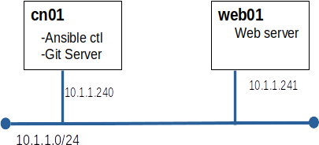

Today we will explore the leading version control software, Git.
Here's and excellent video from MIT covering Git. The first 30 minutes should be more than enough to get started.
Developers use Git to track changes to software and to be able to 'roll back the clock' to view old versions of files. Increasingly admins are using Git to track configuration files, particularly Ansible playbooks.
Even admins who choose not to use Git to version their own files, will often have to use Git to install and update software.
First we will experiment with Git to raise our confidence level. Then we will do some real work with Git:
We will use the same set of nodes we used for the Ansible lab. If you have not kept your VMs, we can use fresh systems. We do not need any of the configuration changes from the Ansible lab. We just need the servers.
yum install git
git config --global user.name "Your Name Comes Here" git config --global user.email you@example.com
Before we start using Git, we should practice a bit. Two options are provided here. The first option is for you to build your own test plan based on the excellent introductory tutorial from the Git team. Option two is to follow the cookbook provided.
These are the detailed steps to place all of /etc in a Git repo.
cd /etc git init
git add .
git commit -m "initial commit"
git branch -M main
10.1.1.33 grogu
git status
git diff /etc/hosts
git add /etc/hosts git commit -m "added grogu to hosts"
Git can work with remote repositories very well. GitHub is the best known git server, and is owned by Microsoft. We will use GitHub shortly. Now we will build our own Git server. note: This is largely an ssh exercise.
Git uses ssh to access remote servers. For this to work smoothly we need to set up key based authentication. Our strategy will be to create a Linux user on cn01 for each of our managed systems (web01)
ssh web01git@cn01 hostname
ssh web01git@cn01 mkdir ./etc.git
ssh web01git@cn01 'cd ./etc.git; git init --bare'
cd /etc git remote add origin web01git@cn01:./etc.git
git push origin mainor
git push --set-upstream origin main
The content for this course is stored on GitHub. Let's get a local copy on w01.
mkdir ~/projects cd ~/projects git clone https://github.com/profjamesmohawk/LinSec.git
firefox LinSec/index.html